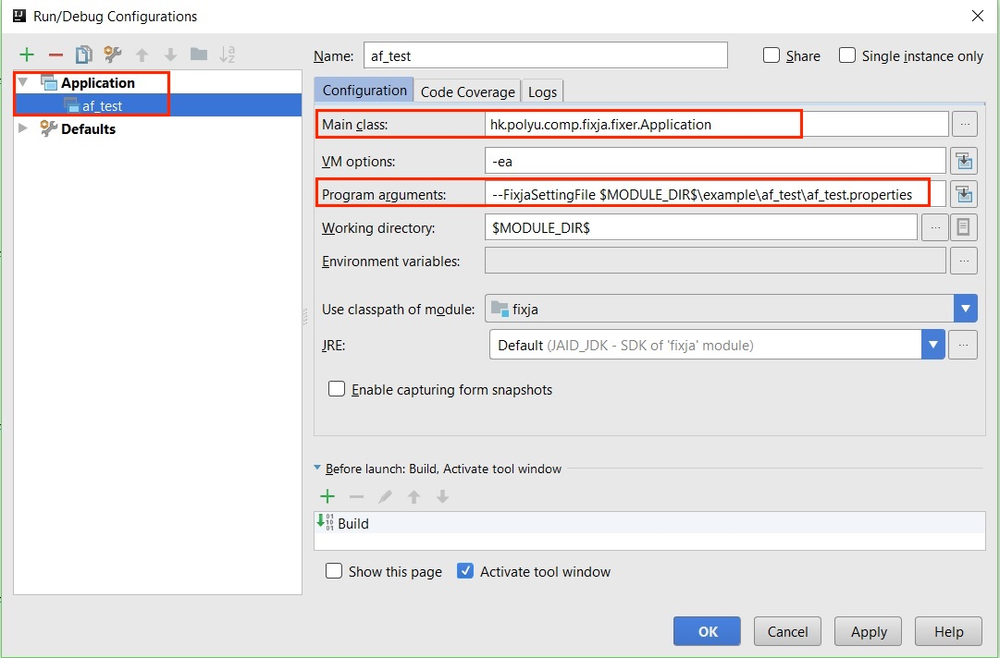
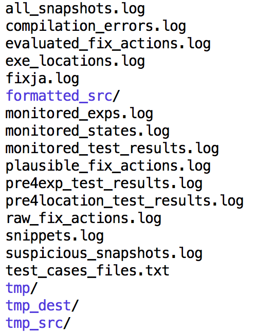

$JAID_DIR$.
Note: The JAID project comes with a simple example project for demonstration in folder $JAID_DIR$/example. You could edit the jaid.properties file to match your machine environment and refer to the following image to config the configuration for fixing the example.

Since it may cause plenty of time for a user who are not familiar with Defects4J or IntroClassJava to prepare the buggy program and a properties file for JAID, we implement this additional script to help preparing both elements needed. With this script, you can get everything ready by one command.
Environment requirement: JDK8 and Python3 (with pip3)
| Argument Name | Explanation |
|---|---|
| JaidSettingFile | Full path to a properties file containing the settings for running JAID. When specified, other command line arguments are ignored. |
| Encoding | Encoding of the project source code files (Default: UTF8). |
| ExpToExclude | List of expressions that should NOT be used for program state monitoring (Default: Empty list). |
| JDKDir | Full path to the JDK installation. |
| LogLevel | Verbosity level of generated logs. Valid values: OFF, ERROR, WARN, INFO, DEBUG, TRACE, ALL. |
| ProjectRootDir | Full path to the project root directory. All other relative paths will be resolved against this path |
| ProjectSourceDir | List of relative paths to the project source directories, separated by path separators (; for Windows and : for Mac OS or Linux). |
| ProjectOutputDir | Relative path to the project output directory. |
| ProjectTestOutputDir | Relative path to the project test output directory. |
| ProjectLib | List of relative paths to the project libraries (e.g., jar files), separated by path separators (; for Windows and : for Mac OS or Linux). |
| ProjectTestSourceDir | List of relative paths to the project test source directories, separated by path separators (; for Windows and : for Mac OS or Linux). |
| ProjectTestsToInclude | List of tests that should be used for fixing. All tests will be used if not specified. Format: FullyQualifiedClassName;FullyQualifiedClassName#MethodName |
| ProjectTestsToExclude | List of tests that should NOT be used for fixing. No test will be excluded if not specified. Format: FullyQualifiedClassName;FullyQualifiedClassName#MethodName |
| ProjectExtraClasspath | List of extra classpaths. |
| MethodToFix | Method to fix. Format: MethodName(Type1,Type2)@FullyQualifiedPackageName.ClassName$InnerClassName. |
| TimeoutPerTest | Timeout in milli seconds for each test. |
| TargetJavaVersion | Source code target java version(Default: 1.8). |
| ProjectCompilationCommand | Command to compile the project. Only needed in special cases. |
| ProjectExecutionCommand | Command to execute the project. Only needed in special cases. |

From a user's point of view, three logs are the most important: